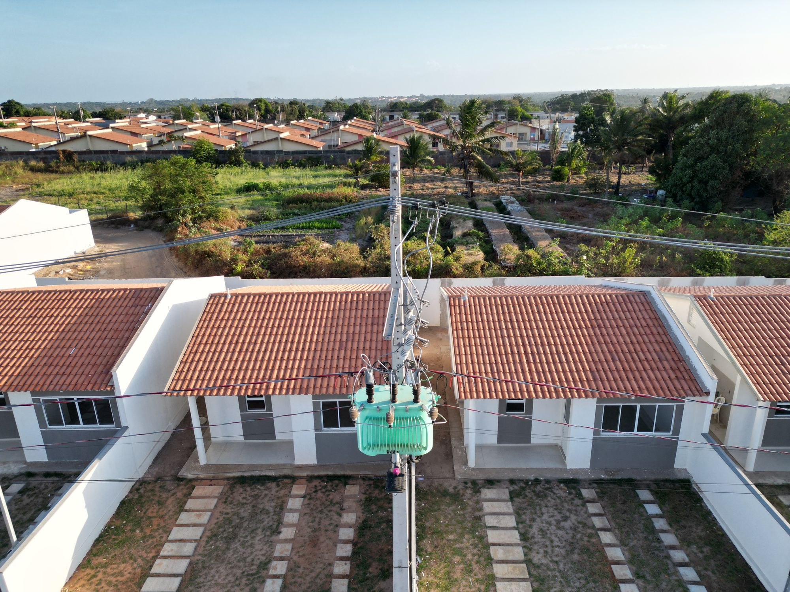
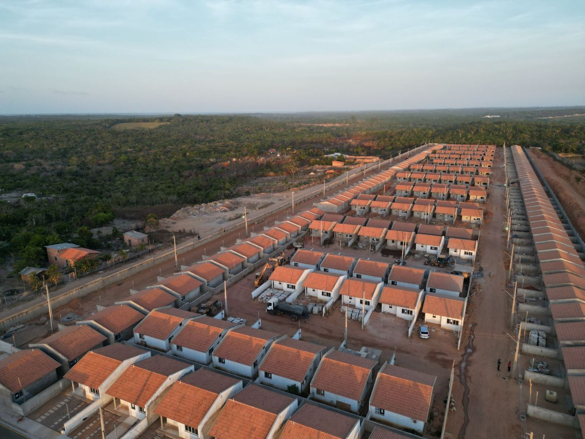
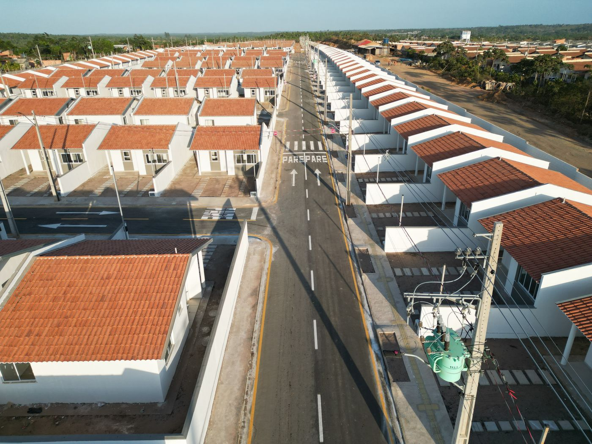

RDU, rede de distribuição urbana
Rede aérea convencional, comum em loteamentos e vias públicas.
Redes de distribuição e iluminação pública
Projetamos, levamos à aprovação da Equatorial e construímos a rede (RDU ou RDC) e a iluminação pública do seu empreendimento, com ART.

O escopo exato de cada obra vem na proposta.
Qual rede é a sua?
A escolha depende do empreendimento, do terreno e das exigências da concessionária. Nós ajudamos a decidir.
Rede aérea convencional, comum em loteamentos e vias públicas.
Cabos cobertos em rede aérea mais compacta, indicada para ruas arborizadas e áreas com pouco espaço.
Cabos enterrados, usada em condomínios e empreendimentos que pedem visual limpo.
Como funciona
O prazo de cada etapa depende do empreendimento e da análise da concessionária. Você é avisado a cada mudança.
Obras



Normas
Rede de distribuição se aprova na concessionária. Projetamos já dentro das normas dela.
Depois que o projeto completo é protocolado, a Equatorial tem até 30 dias para analisar (NT.002 da Equatorial). Com a Voltarc cuidando do processo, o caminho todo costuma levar até cerca de 60 dias. Com um profissional ou empresa despreparada, é comum o processo se arrastar por meses.
As duas coisas. Você pode contratar só o projeto, só a obra ou o pacote completo, com aprovação e ligação. Combinamos na proposta.
Sim. Projetamos e executamos a iluminação das vias e das áreas comuns, junto com a rede ou separadamente.
Depende do porte e do escopo, então não há preço fechado sem conhecer o caso. Mande os dados pelo WhatsApp e retornamos com a proposta.
Cidade, número de lotes ou unidades e se já existe projeto aprovado já bastam para começar.